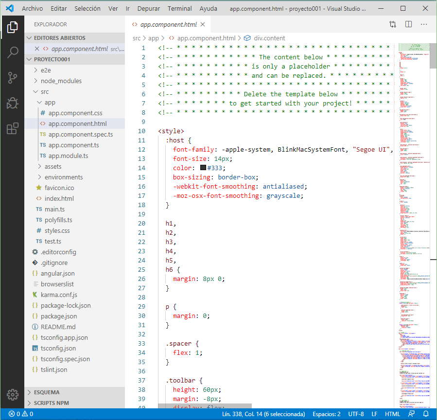

2 - Creación de un proyecto y prueba de su funcionamiento
Para crear un proyecto vamos a utilizar la aplicación Angular CLI que acabamos de instalar en el concepto anterior.
Desde la línea de comandos de Node.js procedemos a ejecutar el siguiente comando:
ng new proyecto001
Se nos pide si queremos crear rutas (tema que veremos más adelante), elegiremos 'N'.
Luego seleccionaremos que utilizaremos archivos CSS para los estilos (valor seleccionado por defecto):
Este comando crea la carpeta proyecto001 e instala una gran cantidad de herramientas que nos auxiliarán durante el desarrollo del proyecto (347mb). Como Angular esta pensado para aplicaciones de complejidad media o alta no hay posibilidad de instalar menor herramientas.
El proceso de generar el proyecto lleva bastante tiempo ya que deben descargarse de internet muchas herramientas.
Se genera una aplicación con el esqueleto mínimo, para probarlo debemos descender a la carpeta que se acaba de crear y lanzar el siguiente comando desde Node:
ng serve -o

Este comando arranca un servidor web en forma local y abre el navegador para la ejecución de la aplicación.
En el navegador tenemos como resultado:

Debemos utilizar un editor de texto para codificar la aplicación. Yo recomiendo el Visual Studio Code, puede visitar luego un tutorial completo del editor VS Code
Si utilizamos este editor podemos elegir la opción: Archivo -> Abrir carpeta y proceder a buscar la carpeta 'proyecto001':
En este concepto no me interesa ver todos las carpetas y archivos generados. Solo efectuaremos un cambio para ver como se reflejan en el navegador.
En la carpeta 'proyecto001' hay una subcarpeta llamada 'src' y dentro de esta una llamada 'app', busquemos el archivo 'app.component.html' y procedamos a borrar las casi 500 líneas.
Si leemos las primeras líneas nos informa que siempre debemos modificar el archivo con los algoritmos de nuestro proyecto (se genera a modo de ejemplo):
Disponemos el siguiente código remplazando al generado en forma automática:
<h1 style="text-align:center">
Bienvenido a {{ title }}
</h1>
Una vez que grabamos los cambios en este archivo podemos ver que automáticamente se ven reflejados en el navegador (recordemos de no cerrar la ventana de Node.js que tiene el servidor web en funcionamiento en forma local):
A partir del próximo concepto comenzaremos a analizar un proyecto Angular, en este momento me interesa solo recordar los pasos que debemos dar para crear y ejecutar un proyecto.